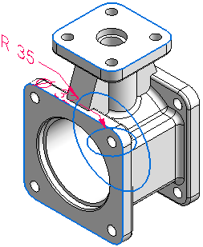
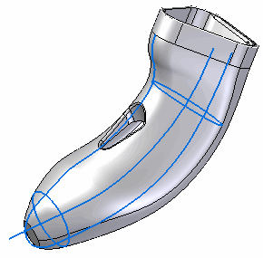
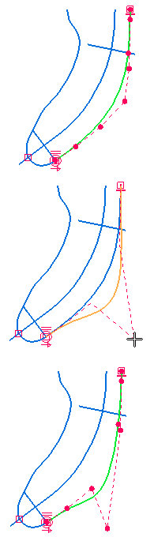

What is surfacing and why use it?
The solid modeling method is typically used when modeling with solid features. The following are key features of the solid modeling approach:
-
It is characterized by 2D sketches/profiles used in creating extrusions, revolutions, and lofts to form solids, and blends on the edges of solids.

-
It most often involves the addition or subtraction of material using analytic shapes.
-
The model's topology is driven by faces.
-
Holes are used for alignment.
-
Feature faces are used for alignment as well as for mating with other features.
-
Edges are rounded for safety and strength.
-
Edges and faces are primarily analytic-based.
Modeling with surface-based features typically begins with a wireframe, from which surfaces are generated. Key features of surface modeling:

-
It is characterized by control points used to define 2D and 3D curves.
-
A model's topology is driven by edges and curves. Edges and faces are mainly based on splines.

-
Surface shapes are very important, therefore direct editability of underlying curves and edges is crucial.
-
Highlight lines, silhouette edges and flow lines of a model are important.